[ 01 ]Solidario
Ayudar también
es liderar.
Una historia en cuatro hojas
La historia del trébol.
Un legado que nació en una familia y hoy pertenece a todos.
Hoja 01 / 04El cajón
Hay símbolos que se eligen. Y hay otros que la vida nos entrega, casi sin que nos demos cuenta, para recordarnos de dónde venimos y qué queremos dejar.
La historia de nuestro trébol de cuatro hojas comienza mucho antes de que existiera este equipo solidario. Comienza con mi abuelo, con mi padre y con un pequeño objeto que atravesó generaciones.
Cuando mi padre falleció, a los 96 años, encontré algo muy especial en uno de los cajones de su escritorio. Guardaba tres cosas: una nuez, una pequeña imagen de la Virgen y un trébol de cuatro hojas disecado, acompañado de una inscripción.
Aquel trébol había sido un regalo de su padre cuando él nació.
Hoja 02 / 04Lo que guardó
Mi abuelo falleció víctima de la gripe española cuando mi padre tenía apenas un año y medio. Prácticamente no tuvo la oportunidad de conocerlo. Sin embargo, aquel pequeño trébol lo acompañó durante toda su vida. Lo conservó por más de nueve décadas, como quien guarda algo cuyo valor no puede medirse.
Cuando lo encontré, me emocionó profundamente pensar en todo lo que representaba.
Mi padre había tenido el privilegio de vivir una vida larga, con alegrías, dificultades, aciertos y desafíos. Una vida plena, como son las vidas verdaderas. Y si algo lo caracterizaba era su generosidad.
Comprendí entonces que aquel trébol era mucho más que un recuerdo. Era una manera de mantener presente a su padre, a quien había perdido siendo apenas un niño. Y, de alguna forma, sentí que ese pequeño símbolo estaba llegando también a mis manos como un legado de mi abuelo.
Tres generaciones unidas por un trébol de cuatro hojas.
Hoja 03 / 04Compartirlo
Podría haberlo guardado entre mis recuerdos más íntimos. Pero sentí que su verdadero valor estaba en hacer exactamente lo contrario: compartirlo.
Porque los legados más importantes no son los bienes materiales. Son los valores, los principios, los gestos y, sobre todo, lo que hacemos por los demás.
Así nació nuestro trébol solidario.
Quise transformar aquel recuerdo familiar en un símbolo colectivo. Que dejara de representar solamente nuestra historia para acompañar nuevas historias. Que no estuviera asociado al dinero, al éxito económico ni al reconocimiento personal, sino a algo mucho más importante: la solidaridad, la generosidad y la contribución a la sociedad.
Hoja 04 / 04Juntos
Con el tiempo, se fueron sumando personas extraordinarias, amigos que comparten esa misma manera de entender la vida: Fernando Montero, Nico Acosta, Andrés Garófalo y el padre Juan Andrés, nuestro querido Gordo Verde, entre tantos otros que nos han acompañado. Juntos formamos un equipo que encuentra en cada proyecto una nueva oportunidad para ayudar.
Nuestro trébol estuvo presente en la construcción de viviendas, en la entrega de platos de comida, en iniciativas vinculadas a la Teletón y en numerosas acciones solidarias. También acompañó proyectos que, a primera vista, podrían parecer muy distintos: automóviles de drift, encuentros multitudinarios y desafíos que combinan creatividad, trabajo, pasión y compromiso social.
Y llegó incluso a formar parte de algo tan especial como la construcción de un Papamóvil, un proyecto que nos llenó de orgullo y que llevó nuestro pequeño símbolo a una dimensión que jamás hubiéramos imaginado.
Porque detrás de cada uno de esos proyectos hay una misma convicción: cuando tenemos la posibilidad de hacer algo por los demás, tenemos también la oportunidad de darle un sentido más profundo a lo que hacemos.
A veces contribuimos con recursos. Otras veces, con trabajo, conocimiento, tiempo, creatividad o simplemente estando presentes.
No importa la magnitud del gesto. Importa la intención con la que se hace.
Hoy, cuando veo nuestro trébol en un vehículo, en una vivienda, en un evento o en cualquier iniciativa solidaria, vuelvo mentalmente a aquel cajón del escritorio de mi padre. Y pienso en lo extraordinario que resulta que algo tan pequeño, que mi abuelo regaló hace casi un siglo, pueda seguir generando cosas buenas tantos años después.
Mi padre lo conservó durante toda su vida.
Yo elegí compartirlo.
Y mi mayor deseo es que ese trébol continúe pasando de mano en mano, inspirando a otros a ayudar, a construir, a acompañar y a devolverle a la sociedad algo de todo lo que la vida nos ha dado.
Porque, al final, el verdadero legado de una persona no está solamente en lo que consiguió, sino en lo que fue capaz de compartir.
Nuestro trébol tiene cuatro hojas. Pero su verdadero valor está en todo lo que podemos hacer juntos.
Alejandro Curcio
[ 02 ]Récord Guinness · 13 abril 2024
Meterse al hielo con los demás.
El 13 de abril de 2024, Montevideo fue sede del Ice Challenge 2024: el récord Guinness al mayor número de personas tomando un baño de hielo de forma simultánea. Lo organizó Alejandro Curcio, y no lo miró desde afuera: se metió al hielo con los demás.
Guinness World Records™ Récord homologado
personas con el cuerpo sumergido
en agua helada al mismo tiempo
- Minutos sumergido
- 3
- Temperatura
- 13°
- Piscinas con hielo
- 90
- Récord anterior
- 509
el mínimo para entrar en el conteo
máximo admitido en el agua
montadas en el predio
Perth, Australia — enero 2024
A beneficio de
Centro Horizonte
Educación de niños con parálisis cerebral.
El evento recaudómás de $975.000
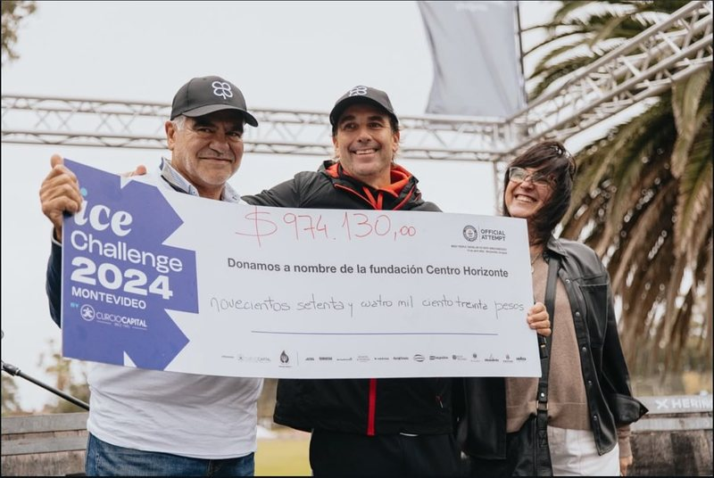
¿Qué es Centro Horizonte?
La Escuela Horizonte nació en 1962 para brindar educación a niños con parálisis cerebral excluidos del sistema educativo.
Evolucionó y obtuvo apoyo público, estableciendo convenios con INAU en 1991 y 1998 para programas de atención parcial y tiempo completo.
En 2020, se modernizó con enfoque reflexivo e interacción, cambiando su nombre a Centro para destacar dos proyectos integrados.
Este cambio no solo reafirma el compromiso del Centro con el tratamiento y desarrollo de personas con parálisis cerebral, sino que también lo posiciona como líder en la promoción de la integración social y la innovación en este campo.
Conocé más de Centro HorizonteCertificación oficial · Guinness World Records™
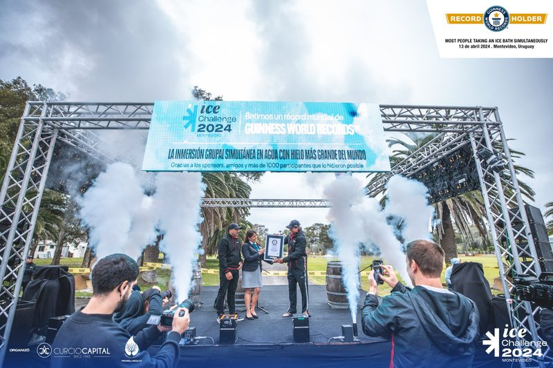
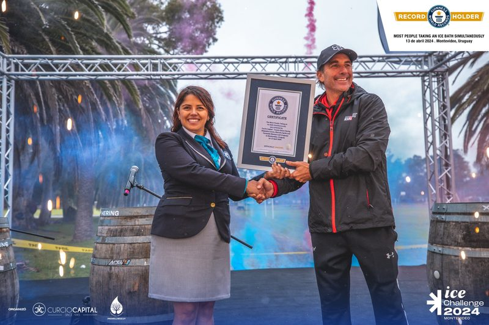
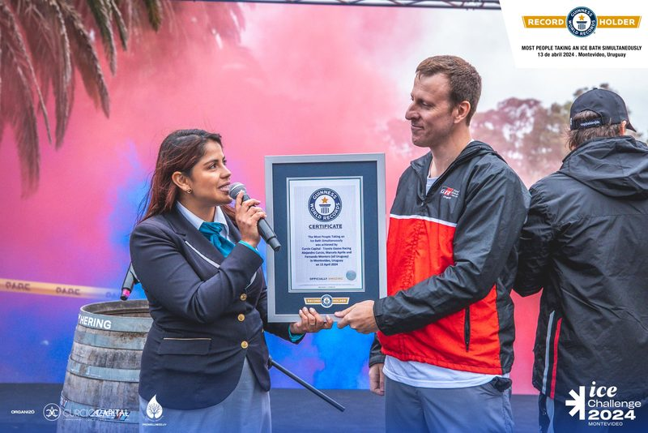
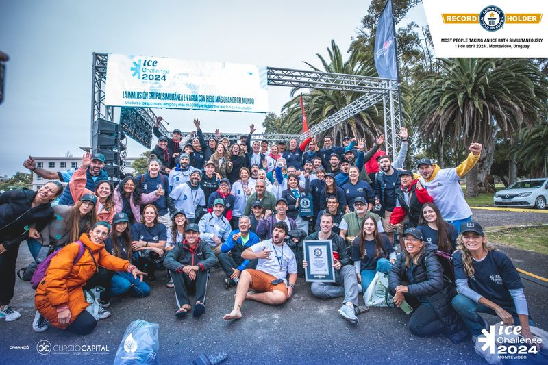
[ 03 ]Teletón · Drift solidario · 2022 — 2024
Teletón.
Drift solidario.
2022 · 2023 · 2024
Tres años consecutivos,
récord de recaudación.
Drift Park Solidario en 2022 y 2023, Drift Arena Solidario en 2024 en el Antel Arena con entrada libre: tres ediciones del drift solidario de Toyota Gazoo Racing, y en cada una se rompió el récord de recaudación para la Fundación Teletón.
¿Qué es Teletón?
La Fundación Teletón Uruguay brinda rehabilitación integral y gratuita a niños, niñas y adolescentes con discapacidad motriz, en todo el país.
Su centro de Montevideo abrió en 2006 y el de Fray Bentos atiende desde 2012. Cada noviembre, la maratón televisiva reúne los fondos que sostienen esa atención durante todo el año. El drift solidario de Toyota Gazoo Racing suma su parte a esa causa.
Conocé más de Teletón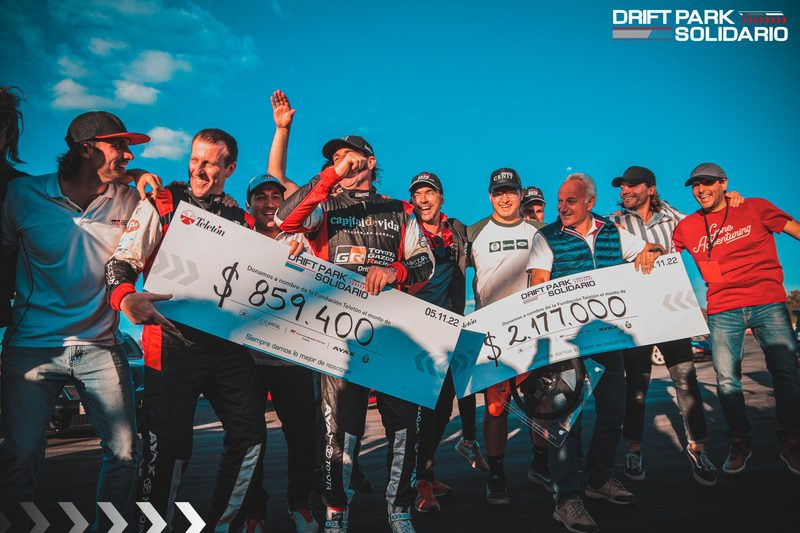
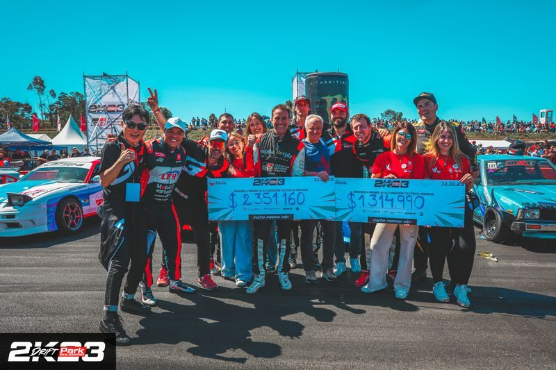
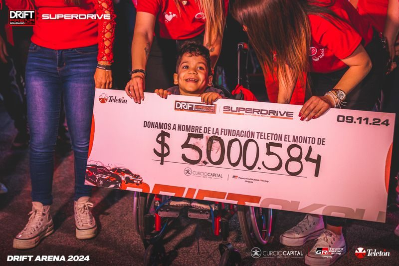
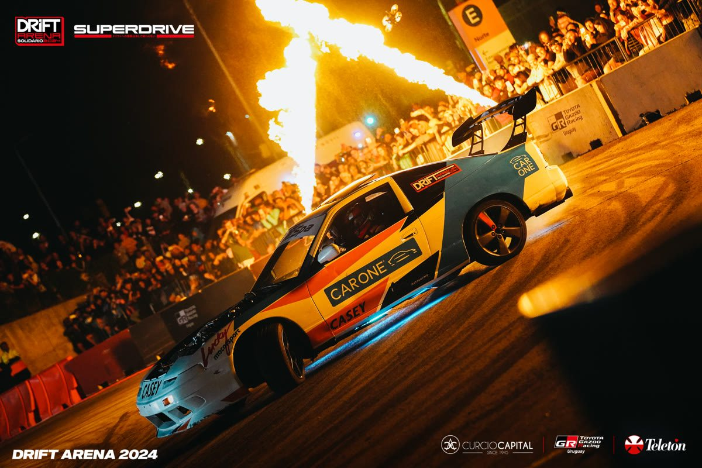
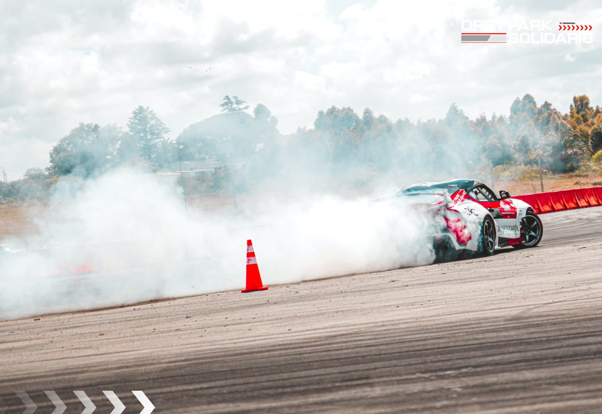
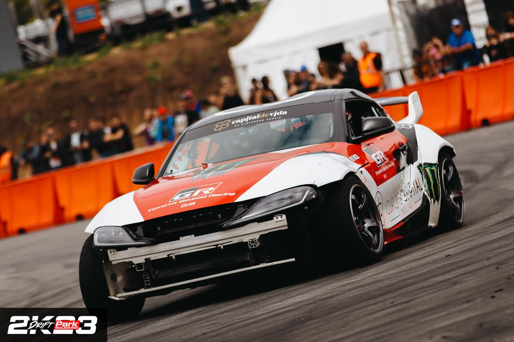
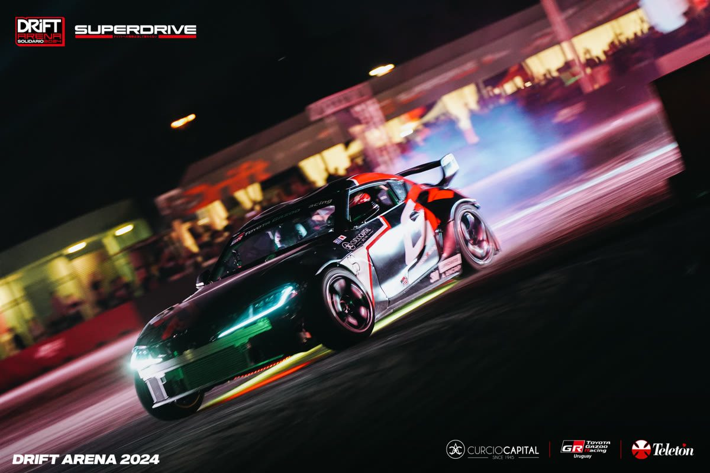
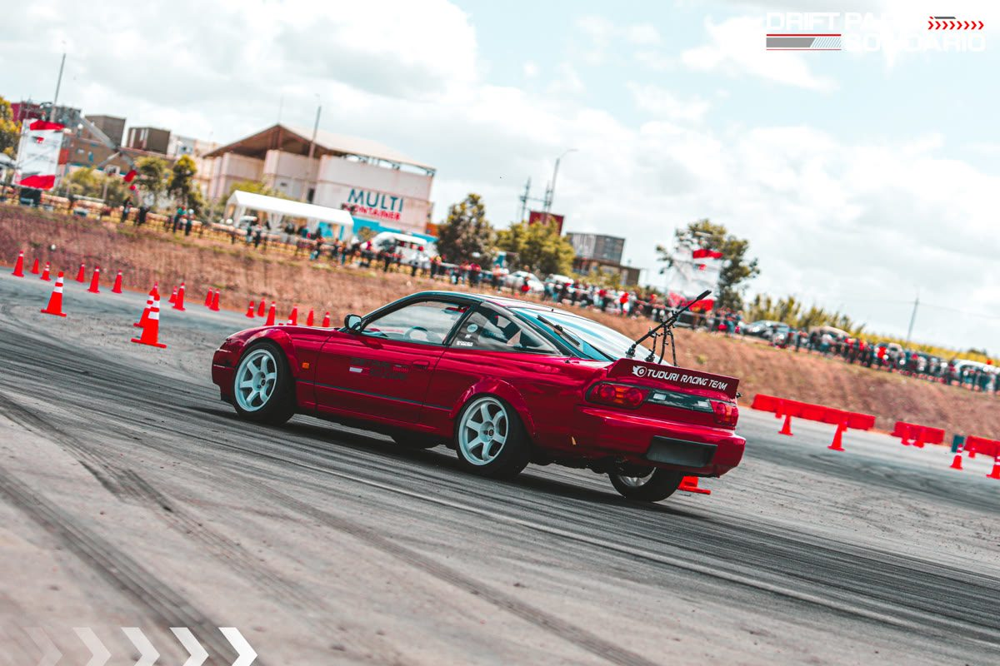
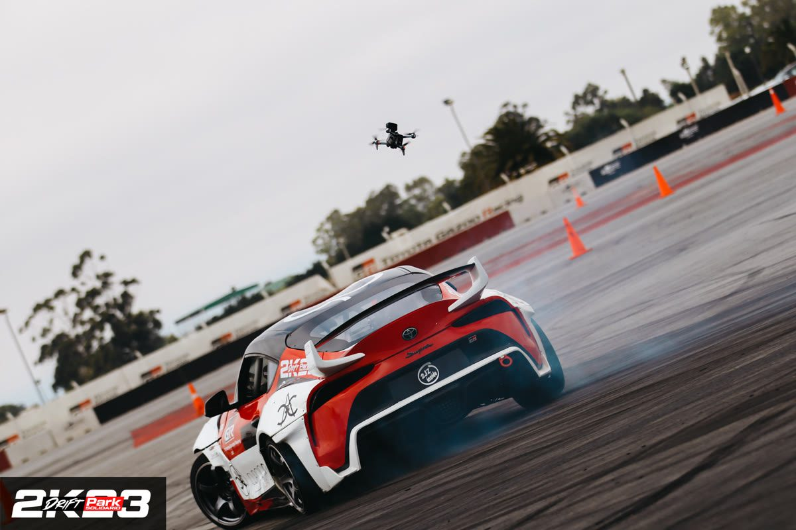
[ 04 ]Pelota al Medio · Ministerio del Interior
Pelota al medio.
Apoyo y acompañamiento constante al programa «Pelota al Medio», del Ministerio del Interior: una iniciativa que promueve la inclusión social y la permanencia educativa de jóvenes a través del deporte.
Durante el año se impulsaron distintas acciones junto al programa, incluyendo la organización de actividades y torneos —como la Copa Toyota—, fortaleciendo el vínculo con la comunidad.
- Programa
- Pelota al Medio
- Impulsa
- Ministerio del Interior
- Objetivo
- Inclusión social y permanencia educativa a través del deporte
- Acciones
- Actividades y torneos durante todo el año
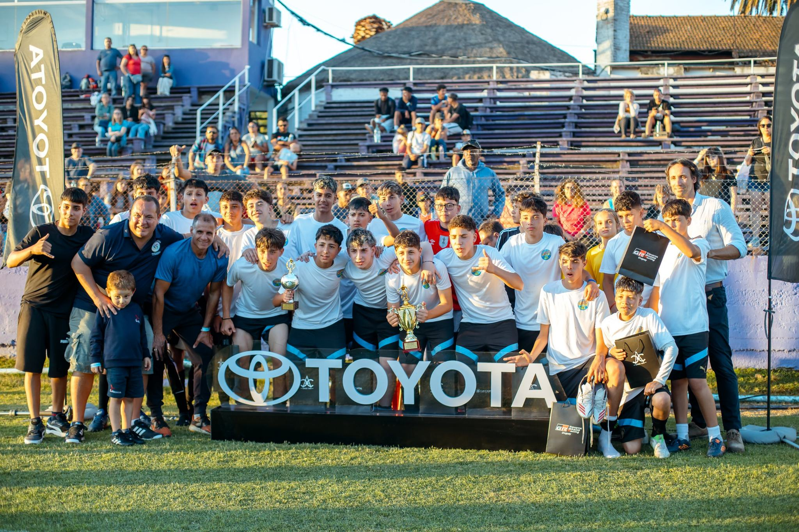
[ 05 ]Fundación Cireneos · Rancho Cero
Una casa cambia el punto de partida.
+150.000niños en Uruguay viven en hogares que se inundan, tienen peligro de derrumbe o presentan carencias graves en sus materiales.
Cuando una casa no protege, todo se vuelve más difícil. Dormir, estudiar, cuidar la salud, sostener una rutina o imaginar un futuro distinto.
Por eso la vivienda no es solo un techo. Una vivienda segura cambia el punto de partida: permite descansar, cuidar la salud, sostener rutinas, estudiar y empezar a proyectar una vida con más estabilidad y oportunidades.
¿Qué es Rancho Cero?
Rancho Cero brinda hogares modulares seguros y funcionales a familias que viven en emergencia habitacional. Cada caso se trabaja junto a una organización social local, que conoce la realidad de la familia, acompaña el proceso y realiza el seguimiento posterior.
Conocé más de Cireneos[ 06 ]TECHO · Récord de casas
20 casas en un día.
TECHO es una organización que trabaja en los asentamientos de América Latina junto a las familias que viven en ellos y a miles de voluntarios. En Uruguay construye viviendas de emergencia desde hace más de 20 años: ya son cerca de 4.000.
Alejandro Curcio se puso la remera, manejó el ómnibus hasta el barrio y se sumó a la obra. Antes de entrar al barrio, TECHO recorrió casa por casa para conocer a cada familia; ese día, 400 voluntarios levantaron 20 viviendas en una sola jornada, un récord para la organización.
- 20
- viviendas en un día
- 400
- voluntarios
[ 07 ]Redalco · Red de Alimentos Compartidos
Lo prometido, cumplido.
Redalco rescata frutas y verduras en perfecto estado que iban a terminar en la basura por su tamaño, su color o su forma. Las recupera en la Unidad Agroalimentaria Metropolitana y en las chacras, y las lleva a merenderos, clubes de niños, centros CAIF y ollas populares.
Alejandro Curcio recorrió el depósito con Yamandú Plada, cofundador y director de Redalco, para entender cómo funciona la operación por dentro. Se fue con un compromiso: donar un autoelevador para que el equipo pudiera mover la mercadería de forma más cómoda y eficiente. Y volvió para entregarlo.
Redalco es una de las organizaciones que acompaña de forma constante, porque cada kilo que se rescata termina en un plato.
Conocé Redalco“El éxito corporativo está vacío si no logramos democratizar las oportunidades y mejorar el ecosistema a nuestro alrededor.”